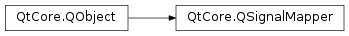

QSignalMapper¶
Synopsis¶
Functions¶
- def
mapping(id) - def
mapping(object) - def
mapping(text) - def
mapping(widget) - def
removeMappings(sender) - def
setMapping(sender, id) - def
setMapping(sender, object) - def
setMapping(sender, text) - def
setMapping(sender, widget)
Detailed Description¶
The
PySide2.QtCore.QSignalMapperclass bundles signals from identifiable senders.This class collects a set of parameterless signals, and re-emits them with integer, string or widget parameters corresponding to the object that sent the signal.
The class supports the mapping of particular strings or integers with particular objects using
PySide2.QtCore.QSignalMapper.setMapping(). The objects’ signals can then be connected to thePySide2.QtCore.QSignalMapper.map()slot which will emit thePySide2.QtCore.QSignalMapper.mapped()signal with the string or integer associated with the original signalling object. Mappings can be removed later usingPySide2.QtCore.QSignalMapper.removeMappings().Example: Suppose we want to create a custom widget that contains a group of buttons (like a tool palette). One approach is to connect each button’s
clicked()signal to its own custom slot; but in this example we want to connect all the buttons to a single slot and parameterize the slot by the button that was clicked.Here’s the definition of a simple custom widget that has a single signal,
clicked(), which is emitted with the text of the button that was clicked:class ButtonWidget(QWidget): def __init__(self, texts, parent=None): QWidget.__init__(self, parent) ...The only function that we need to implement is the constructor:
def __init__(self, texts, parent): QWidget.__init__(self, parent) self.signalMapper = QSignalMapper(self) layout = QGridLayout() for text, index in enumerate(texts): button = QPushButton(text) self.connect(SIGNAL("clicked()"), self.signalMapper, SLOT("map()")) self.signalMapper.setMapping(button, text) layout.addWidget(button, index / 3, index % 3) self.signalMapper.connect(SIGNAL("mapped(const QString &)"), self, SLOT("clicked(const QString &)")) self.setLayout(layout)A list of texts is passed to the constructor. A signal mapper is constructed and for each text in the list a
PySide2.QtWidgets.QPushButtonis created. We connect each button’sclicked()signal to the signal mapper’sPySide2.QtCore.QSignalMapper.map()slot, and create a mapping in the signal mapper from each button to the button’s text. Finally we connect the signal mapper’sPySide2.QtCore.QSignalMapper.mapped()signal to the custom widget’sclicked()signal. When the user clicks a button, the custom widget will emit a singleclicked()signal whose argument is the text of the button the user clicked.This class was mostly useful before lambda functions could be used as slots. The example above can be rewritten simpler without
PySide2.QtCore.QSignalMapperby connecting to a lambda function.ButtonWidget::ButtonWidget(const QStringList &texts, QWidget *parent) : QWidget(parent) { QGridLayout *gridLayout = new QGridLayout; for (int i = 0; i < texts.size(); ++i) { QString text = texts[i]; QPushButton *button = new QPushButton(text); connect(button, &QPushButton::clicked, [=] { clicked(text); }); gridLayout->addWidget(button, i / 3, i % 3); } setLayout(gridLayout); }
-
class
PySide2.QtCore.QSignalMapper([parent=nullptr])¶ Parameters: parent – PySide2.QtCore.QObjectConstructs a
PySide2.QtCore.QSignalMapperwith parentparent.
-
PySide2.QtCore.QSignalMapper.map(sender)¶ Parameters: sender – PySide2.QtCore.QObjectThis slot emits signals based on the
senderobject.
-
PySide2.QtCore.QSignalMapper.map() This slot emits signals based on which object sends signals to it.
-
PySide2.QtCore.QSignalMapper.mapped(arg__1)¶ Parameters: arg__1 – PySide2.QtCore.int
-
PySide2.QtCore.QSignalMapper.mapped(arg__1) Parameters: arg__1 – unicode
-
PySide2.QtCore.QSignalMapper.mapped(arg__1) Parameters: arg__1 – PySide2.QtWidgets.QWidget
-
PySide2.QtCore.QSignalMapper.mapped(arg__1) Parameters: arg__1 – PySide2.QtCore.QObject
-
PySide2.QtCore.QSignalMapper.mapping(text)¶ Parameters: text – unicode Return type: PySide2.QtCore.QObjectThis function overloads
PySide2.QtCore.QSignalMapper.mapping().
-
PySide2.QtCore.QSignalMapper.mapping(id) Parameters: id – PySide2.QtCore.intReturn type: PySide2.QtCore.QObjectReturns the sender
PySide2.QtCore.QObjectthat is associated with theid.
-
PySide2.QtCore.QSignalMapper.mapping(widget) Parameters: widget – PySide2.QtWidgets.QWidgetReturn type: PySide2.QtCore.QObjectThis function overloads
PySide2.QtCore.QSignalMapper.mapping().Returns the sender
PySide2.QtCore.QObjectthat is associated with thewidget.
-
PySide2.QtCore.QSignalMapper.mapping(object) Parameters: object – PySide2.QtCore.QObjectReturn type: PySide2.QtCore.QObjectThis function overloads
PySide2.QtCore.QSignalMapper.mapping().Returns the sender
PySide2.QtCore.QObjectthat is associated with theobject.
-
PySide2.QtCore.QSignalMapper.removeMappings(sender)¶ Parameters: sender – PySide2.QtCore.QObjectRemoves all mappings for
sender.This is done automatically when mapped objects are destroyed.
Note
This does not disconnect any signals. If
senderis not destroyed then this will need to be done explicitly if required.
-
PySide2.QtCore.QSignalMapper.setMapping(sender, text)¶ Parameters: - sender –
PySide2.QtCore.QObject - text – unicode
Adds a mapping so that when
PySide2.QtCore.QSignalMapper.map()is signalled from thesender, the signal mapped(text) is emitted.There may be at most one text for each sender.
- sender –
-
PySide2.QtCore.QSignalMapper.setMapping(sender, id) Parameters: - sender –
PySide2.QtCore.QObject - id –
PySide2.QtCore.int
Adds a mapping so that when
PySide2.QtCore.QSignalMapper.map()is signalled from the givensender, the signal mapped(id) is emitted.There may be at most one integer ID for each sender.
- sender –
-
PySide2.QtCore.QSignalMapper.setMapping(sender, widget) Parameters: - sender –
PySide2.QtCore.QObject - widget –
PySide2.QtWidgets.QWidget
Adds a mapping so that when
PySide2.QtCore.QSignalMapper.map()is signalled from thesender, the signal mapped(widget) is emitted.There may be at most one widget for each sender.
- sender –
-
PySide2.QtCore.QSignalMapper.setMapping(sender, object) Parameters: - sender –
PySide2.QtCore.QObject - object –
PySide2.QtCore.QObject
Adds a mapping so that when
PySide2.QtCore.QSignalMapper.map()is signalled from thesender, the signal mapped(object) is emitted.There may be at most one object for each sender.
- sender –
© 2018 The Qt Company Ltd. Documentation contributions included herein are the copyrights of their respective owners. The documentation provided herein is licensed under the terms of the GNU Free Documentation License version 1.3 as published by the Free Software Foundation. Qt and respective logos are trademarks of The Qt Company Ltd. in Finland and/or other countries worldwide. All other trademarks are property of their respective owners.